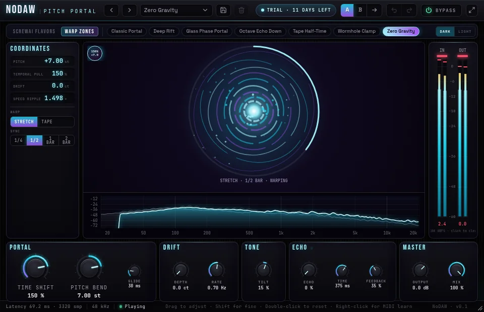

Bend time.
Pitch stays yours.
A time warp synced to your host tempo, from half-time at 50 % to double speed at 200 %, with a pitch bend of ±12 semitones that is independent of time.

Time Shift warps inside each sync period, so the loop keeps its bar length. Set BPM to your file’s tempo. Drop any audio file on this panel to use your own. Double-click a slider to reset it. Space plays and stops. Export renders offline with the current settings.
What’s real here.
- PortedThe engine: the time warp (WSOLA Stretch and Tape modes, synced to 1/4, 1/2 bar, 1 bar or 2 bars), the pitch shifter with glide and drift, the tilt tone, the echo and the latency-matched mix.
- ParamsAll 13 parameters plus bypass, with the plugin’s own ranges, units and curves (14 host parameters in the plugin).
- PresetsAll 14 factory presets, by name and value, read from the plugin’s preset files.
- A/BBypass uses the engine’s own crossfade to the latency-delayed dry signal, so the switch never clicks.
- Plugin onlyHost tempo and transport (here the warp follows the BPM field, starting from the top of the loop)
- Plugin onlyThe plugin’s portal visual and meters
- Plugin onlyDAW automation, MIDI learn, undo/redo, A/B slots and user presets
- LimitsA plugin can’t change your host’s timeline, so time is warped inside each sync period.
- StatusThe Temporal Pitch Portal plugin (VST3 + CLAP, Windows x64) is in development: unreleased, not for sale, no price yet.
Temporal Pitch Portal, stage by stage.

Stretch or Tape
Stretch keeps the pitch with WSOLA grains aligned by cross-correlation. Tape bends pitch with the speed, like a varispeed deck.

Warp Zones and ScrewAI Flavors
14 presets: the prototype’s 5 Warp Zones and 5 ScrewAI Flavors, plus extras. Here time and pitch are independent.

A portal that reads the engine
The rings turn with time and warp with pitch. The Dimensional Coordinates show the pitch actually applied, temporal pull, drift and speed ripple.
Sync periods
Time warps inside each period of 1/4, ½ bar, 1 bar or 2 bars. The longest period is 4 s; longer bars are clamped.
Effects
Drift is a wandering micro-pitch with its own rate, Tone is a tilt, and Echo is a return on the shifted signal.
Dimensional History
A bubble per edit: click one to go back. The last 20 are kept. Dark or light look.
 ScrewChopped & screwed
ScrewChopped & screwed RacksModular channel rack
RacksModular channel rack Harmonic SpaceSpectral Space Designer
Harmonic SpaceSpectral Space Designer Chronos Dynamic EQSeven dynamic bands
Chronos Dynamic EQSeven dynamic bands Chronos WeaverSpectral morph, freeze & cloud
Chronos WeaverSpectral morph, freeze & cloud